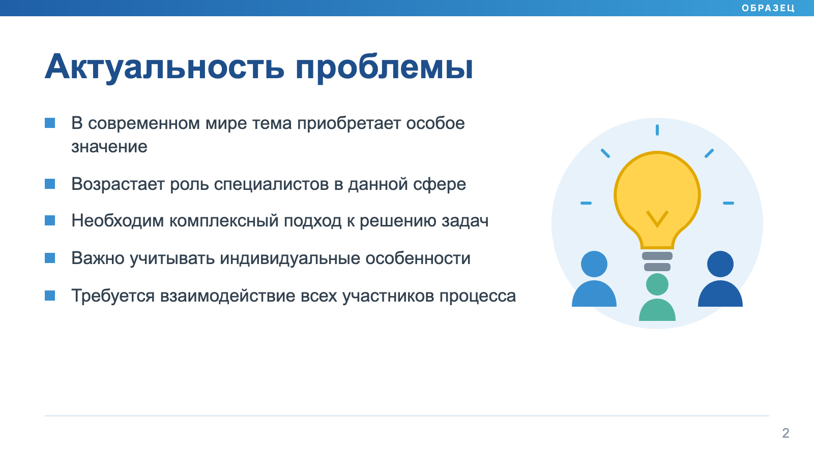
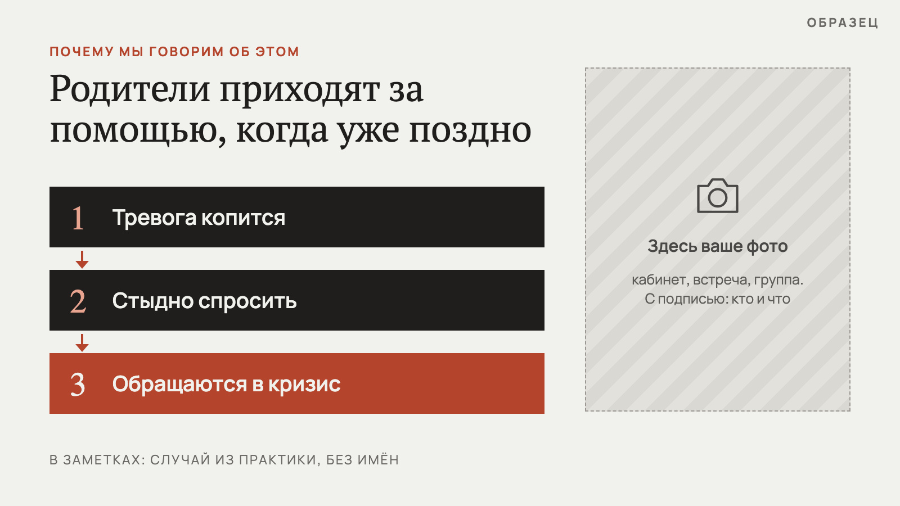

Разбор · нейросеть и презентации
Сделали презентацию через нейросеть, а вышло скучно: 3 правки
«Вроде аккуратно, а смотреть скучно». Так часто бывает, если сделать презентацию через нейросеть. Исправляется за вечер.
Коротко
- Заголовок-тему перепишите выводом.
- Списки превратите в схемы. Подряд не больше двух одинаковых слайдов.
- Общие слова замените своими примерами и фото, цифры сверьте с исходником.
У нейросети просите не слайды, а план слайдов. Два готовых запроса ниже, копируются одной кнопкой.
Нет вечера на правки? Пришлите текст, помощник задаст пару вопросов и назовёт цену.


Откройте презентацию и прочитайте подряд только заголовки. Сложился пересказ доклада? Отлично. Вышло «Актуальность. Основные направления. Заключение»? Нейросеть дала вам темы, а не мысли. Это правка 1.
Почему у нейросети выходит скучно
ChatGPT и Claude пишут то, что чаще всего встречается в похожих текстах. Без точного задания получается средняя презентация: заголовок-тема, пять пунктов, и так пятнадцать раз. Слова гладкие, но общие: «играет важную роль», «требует комплексного подхода». Они подходят к любому докладу, а значит, ничего не говорят о вашем.
Бросать нейросеть не нужно. Ей нужно точное задание, а черновику нужен человек, который доведёт его глазами.
1Вместо темы вывод
Как выглядит. «Актуальность проблемы», «Основные направления», «Заключение». Зал первым делом смотрит на заголовок. Если там тема, он сам гадает, к чему вы ведёте.
Как исправить
- Выпишите заголовки столбиком.
- К каждому спросите: «И что из этого следует?» Ответ одной фразой с глаголом и есть новый заголовок. Было «Актуальность проблемы», стало «Родители приходят за помощью, когда уже поздно».
- Можно поручить это нейросети: «Перепиши заголовки выводами одной фразой, только из моего текста». Потом проверьте, что выводы ваши.
2Вместо пятнадцати списков схемы
Как выглядит. Все слайды одинаковые: заголовок, пять пунктов, иногда картинка сбоку. Через пять минут зал перестаёт понимать, где вы.
Как исправить
- Подберите каждому списку форму. Равные пункты: карточки. Этапы: лента. Всё вокруг одного главного: колесо. Одно вызывает другое: цепочка. Два варианта: таблица. Все пять схем разобраны в статье «5 схем вместо абзаца».
- Подряд не больше двух слайдов одного вида. Каждый пятый-шестой сделайте тёмным, с одной крупной мыслью: у доклада появится дыхание.
- Пояснения перенесите в заметки докладчика. На слайде остаются два-четыре слова на пункт.
3Вместо общего своё
Как выглядит. «В современном мире», «важно учитывать индивидуальные особенности», улыбающиеся люди с фотостока. Иногда точная цифра или цитата, которой в вашем тексте не было.
Почему опасно. Общие слова зал пропускает мимо ушей. А нейросеть умеет уверенно написать число, которого нет ни в вашем тексте, ни в жизни. Спросят из зала «откуда это?», и ответить будет нечего.
Как исправить
- Вычеркните фразы, которые подошли бы к любому докладу. Поставьте на их место своё: случай из работы без имён, вопрос, который вам задают чаще всего.
- Каждую цифру, исследование и цитату сверьте с исходным текстом. Там нет? Спросите в чате: «Откуда эта цифра? Дай источник». Источника нет, уберите.
- Картинки из интернета замените своими фото с подписью. Своё фото доказывает, картинка «вообще» только украшает.
Два готовых запроса для ChatGPT или Claude
Главная хитрость: просить не слайды, а план слайдов. Таблицу исправить проще, чем пятнадцать готовых слайдов. Когда план устроит, в том же чате попросите файл PowerPoint или соберите слайды сами.
Запрос 1. План слайдов из текста. Впишите три строки в квадратных скобках и вставьте свой текст в конец.
Сделай из моего текста не слайды, а план слайдов для выступления. Кто слушает: [родители / коллеги / клиенты] Сколько минут: [15] Где выступаю: [педсовет, конференция, вебинар] Правила: 1. Одна мысль на слайд. Слайдов примерно столько, сколько минут. 2. Заголовок каждого слайда - вывод одной фразой с глаголом, а не тема. Выводы только из моего текста. 3. Для каждого слайда предложи форму: карточки, лента, колесо, цепочка, таблица, одно число крупно, фото с подписью, цитата. Подряд не больше двух слайдов одной формы. 4. На слайде кроме заголовка не больше 15 слов, остальное в колонку «Что сказать вслух». 5. Не придумывай цифры, исследования, цитаты и примеры. Не хватает факта - пиши [НУЖЕН ФАКТ: какой]. 6. Без фраз «в современном мире», «играет важную роль», «требует комплексного подхода». 7. Где нужны мои фото, пиши [ФОТО: что на снимке]. 8. Последний слайд: главная мысль и одно действие для слушателя на завтра. Ответь таблицей: № | Заголовок-вывод | Что на слайде | Форма | Что сказать вслух | Чего не хватает. Мой текст: [вставьте текст доклада, реферат или конспект]
Запрос 2. Проверка готовой презентации. Если слайды уже есть и вышли скучными.
Вот текст моих слайдов по порядку: [заголовки и текст каждого слайда]. Вот мой исходный текст: [реферат или конспект]. Ответь списком по номерам слайдов, ничего не переписывая: 1. Где заголовок - тема, а не вывод. Предложи вывод одной фразой. 2. Где список можно заменить схемой: карточки, лента, колесо, цепочка или таблица. 3. Где подряд больше двух слайдов одного вида. 4. Какие цифры, цитаты и имена есть на слайдах, но нет в моём тексте. 5. Какие фразы общие и подошли бы к любому докладу.
Скачать оба запроса простой текстовый файл. Работает в ChatGPT и Claude. Без регистрации.
Запрос дал план, а собирать некогда? Пришлите план или текст. Черновик вы увидите до оплаты.
Как это делаю я: помощник собирает, я довожу глазами
Я Алёна Прасолова, собираю презентации к выступлениям для педагогов, психологов, мастеров и малого бизнеса. Работаю ровно так, как написано выше: помощник (ИИ) готовит план и черновик, потом я смотрю каждый слайд на весь экран и правлю то, чего нейросеть не замечает.
Нейросеть не видит слайд так, как его увидит зал.
Однажды помощник нарисовал на слайде ладони, а на экране они читались как башмак. По тексту всё было верно, ошибку видно только глазами.
Второе правило: ни одной цифры сверх текста заказчика. Так было в презентации психолога Анны Комарницькой к международному симпозиуму: 17 слайдов, все цифры из её реферата. Анна вернулась к нам уже пятый раз.
Какая из трёх правок нужна вашей презентации больше всего? Если «все три, а выступать послезавтра», отдайте её мне.
Не хотите разбираться сами
Нет вечера на доводку? Пришлите текст мне, сделаю по этой же схеме: помощник собирает, я довожу глазами.
от 1 500 ₽
- Презентация до 10 слайдов.
- Сначала черновик, оплата после него.
- Редактируемый файл PowerPoint: поменять слово или цифру перед выступлением сможете сами, без меня.
Откроется бот-приёмщик в мессенджере MAX: он спросит про выступление и назовёт цену. Удобнее Telegram? Напишите мне туда.
Частые вопросы
В какой нейросети лучше делать презентацию?
Я работаю в ChatGPT и Claude, запросы из статьи подходят к обоим. Важнее не выбор нейросети, а задание: план с выводами и формами слайдов, а не «сделай презентацию».
Можно сразу попросить готовый файл PowerPoint?
Можно. Но сначала план: в таблице ошибку видно сразу, а в готовом файле её придётся искать по слайдам. Утвердили план, тогда просите файл.
Нейросеть написала цифру. Как понять, что она настоящая?
Сверьте с исходным текстом. Там нет? Спросите источник и проверьте его сами. Не нашли, уберите: на выступлении за цифру отвечаете вы, а не нейросеть.
Алёна ПрасоловаПрезентации, афиши и памятки к выступлениям. Работы показаны с разрешения заказчиков, учебные образцы помечены.